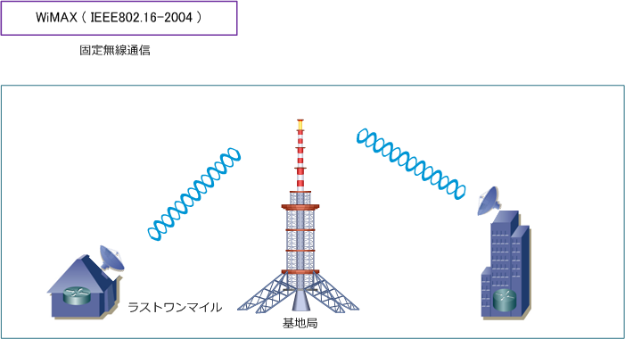
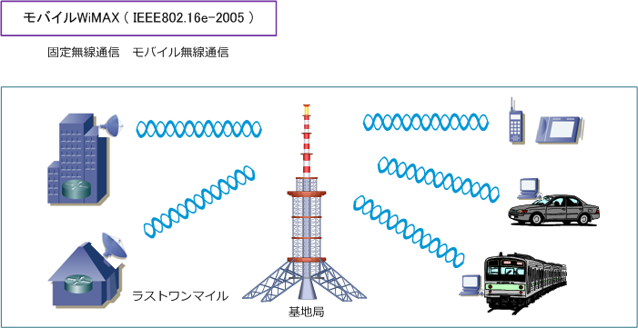
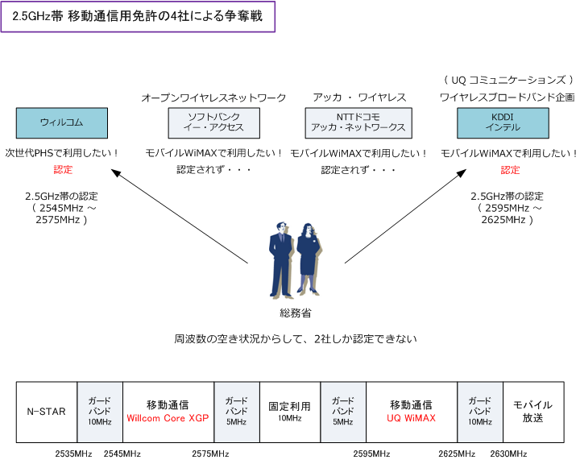
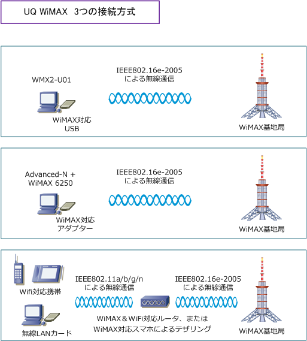

WiMAX
前提として ： WiMAXの解説を読む前に
このWiMAXの記事は無線LANをはじめからのコンテンツに掲載していますが、WiMAXは無線通信技術の規格 の１つであり、無線LANの通信技術の規格の１つではありません。今まで解説してきた無線LANの標準規格の IEEE802.11a, b, g, n などはIEEE802.11が母体ですが、WiMAXについてはIEEE802.16が母体となります。
WiMAXとは
WiMAX（ワイマックス）とはWorldwide Interoperability for Microwave Accessの略であり、日本語で解釈 するとマイクロ波を利用した世界標準の通信方式という意味。WiMAXは、当初は例えばユーザ宅と基地局間の 長距離の固定の無線通信を目的としていました。固定無線通信は FWA（Fixed Wireless Access）と言います。 この固定無線通信は、IEEE802.16-2004で策定されておりこの規格のことが WiMAX のことです。異なる機器 同士の相互接続性を実現するために「WiMAXフォーラム」と「IEEE802.16委員会」で標準化を進めています。

| WiMAX | |
|---|---|
| 規格 | IEEE802.16-2004 |
| 周波数帯域 | 2GHz ～ 11GHz帯 |
| 最大伝送速度 | 最大74.81Mbps （20MHz帯時） |
| チャネル幅 | 1.25 ～ 20MHz |
| 変調方式 | OFDMA ： QPSK/16QAM/64QAM |
| セル半径 | 2 ～ 10Km |
| 移動性 | 固定、可搬 |
| 策定時期 | 2004年6月 |
【 WiMAX ( IEEE802.16-2004 ) - 変調方式の詳細 】
| IEEE規格 | 帯域幅 | 変調方式 / 伝送速度 | |||||||
|---|---|---|---|---|---|---|---|---|---|
| IEEE802.16-2004 | 20MHz | OFDMA | |||||||
| IEEE802.16-2004 | 20MHz | BPSK 1/2 | BPSK 3/4 | QPSK 1/2 | QPSK 3/4 | 16QAM 1/2 | 16QAM 3/4 | 64QAM 2/3 | 64QAM 3/4 |
| IEEE802.16-2004 | 20MHz | - | - | 16.5Mbps | 25Mbps | 33.5Mbps | 50Mbps | 66.5Mbps | 75Mbps |
モバイルWiMAXとは
WiMAXの技術に移動体を想定したハンドオーバー（ 接続する基地局を切り替えること ）の仕様を追加した 規格のことをモバイルWiMAXと言います。IEEE802.16e-2005で策定。日本ではUQコミュニケーションズの 高速モバイル通信サービスとして UQ Wimax がありますが、これはモバイルWiMAX技術を使用したサービス のことです。一般的にこの「モバイルWiMAX」を「WiMAX」と呼ぶ人が多いのですが、ITエンジニアとして UQ WiMAXは WiMAX ではなく「モバイルWiMAX」の技術を使用したサービスであることは認識しましょう。

| モバイルWiMAX | |
|---|---|
| 規格 | IEEE802.16e-2005 |
| 周波数帯域 | 6GHz以下 |
| 最大伝送速度 | 75Mbps （20MHz帯時） |
| チャネル幅 | 1.25 ～ 20MHz |
| 変調方式 | SOFDMA ： QPSK/16QAM/64QAM |
| セル半径 | 1 ～ 3Km |
| 移動性 | 固定、可搬、移動体（ 時速120Kmまで ) |
| 策定時期 | 2005年12月 |
【 WiMAX ( IEEE802.16e-2005 ) - 変調方式の詳細 】
| IEEE規格 | 帯域幅 | 変調方式 / 伝送速度 | |||||||
|---|---|---|---|---|---|---|---|---|---|
| IEEE802.16e-2005 | 20MHz | SOFDMA ( スケーラブルOFDMA ) | |||||||
| IEEE802.16e-2005 | 20MHz | BPSK 1/2 | BPSK 3/4 | QPSK 1/2 | QPSK 3/4 | 16QAM 1/2 | 16QAM 3/4 | 64QAM 2/3 | 64QAM 3/4 |
| IEEE802.16e-2005 | 20MHz | - | - | 16.5Mbps | 25Mbps | 33.5Mbps | 50Mbps | 66.5Mbps | 75Mbps |
モバイルWiMAXでは、携帯電話のように基地局を切り替えながら連続して通信できるので、時速120Kmの移動体の中でも通信可。 モバイルWiMAX対応ルータは、メーカにより規格名が「IEEE802.16e-2005」ではなく省略して「IEEE802.16e」となっています。
モバイルWiMAXで使用できる2.5GHz帯の争奪戦
モバイルWiMAXで使用できる周波数帯は、6GHz帯以下（ 2.5GHz帯 / 3.5GHz帯 / 5.8GHz帯の使用が推奨 ） となります。日本では、2.5GHz帯を空き周波数として割り当てることにしたのですが、4社がこの周波数帯域 を使用したく免許申請を行ったのですが、空き状況からして2社にしか割り当てられません。厳正な審査の結果 ウィルコムとワイヤレスブロードバンド企画（ UQ Communications ）の2社を総務省は認定しました。

UQ WiMAXとISP WiMAXの違い
以上の内容の通り、現時点でモバイルWiMAXの 通信サービスを提供できるのはUQコミュニケー ションズだけとなります。ISP名がついたWiMAX がありますが、結局は、UQ WiMAXのインフラを 借りることで、サービスを提供している状況です。
UQ WiMAXとISP WiMAXの大きな違いとしては ISPの場合はサポート体制がしっかりとしている ことや、メールやブログなどの付加サービスが 充実していることでしょう。但し、その分は結局 コストに跳ね返ってくるのでITリテラシーの高い ITエンジニアには、UQ Wimax をお勧めします。
UQ WiMAXの接続方式
現在、UQ WiMAXを3つの接続方式で利用することができます。1つ目はパソコンに「WiMAX対応USB接続 データ通信カード」を挿して利用する方法。2つ目はWiMAX対応モジュールが搭載されたいわゆるWiMAX PC を利用する方法。3つ目はWiMAX対応ルータを使用して複数のクライアントPC等が接続する方法となります。

※ テザリングについては「テザリングとは」をご参考下さい。
参考情報 ：主なワイヤレスサービスの通信方式の一覧
NTTドコモ、ソフトバンク、イーモバイルともW-CDMA方式を採用していますが、KDDIはCDMA2000を採用 しています。が、どのキャリアも最終的にLTE（Long Term Evolution）を向いています。WiMAXについては WiMAX（75Mbps）からWiMAX2（330Mbps）に進化を遂げようとしています。WiMAX2は、4Gの規格です。
| 通信方式 | 使用周波数 ( 日本 ) | 最大伝送速度 | 電波到達距離 | 用途 |
|---|---|---|---|---|
| Wi-Fi ( IEEE802.11a/b/g/n ) |
2.4GHz / 5GHz | b = 11Mbps a, g = 54Mbps n = 600Mbps |
0.1 ～ 0.8 km | 無線LAN |
| モバイルWiMAX ( IEEE802.16e-2005 ) |
2.5GHz | 75Mbps | 2 km | モバイルワイヤレス |
| W-CDMA | 2GHz帯など | 384Kbps | 10 km | 第3世代携帯電話 （3G） ( NTT FOMA / Softbank 3G ) |
| HSPA （ W-CDMAの拡張 ) |
2GHz帯など | 14.4Mbps = 受信 5.76Mbps = 送信 |
3 km | 第3.5世代携帯電話 （3.5G） ( FOMAハイスピード/3Gハイスピード) |
| CDMA2000 1xMC |
2GHz帯など | 144Kbps | 10 km | 第3世代携帯電話 （3G） ( KDDI CDMA 1x ) |
| CDMA2000 1xEV-DO Rev.A |
2GHz帯など | 3.1Mbps = 受信 1.8Mbps = 送信 |
10 km | 第3.5世代携帯電話 （3.5G） ( KDDI CDMA 1x WIN ) |
| CDMA2000 1xEV-DO MC-Rev.A |
2GHz帯など | 9.3Mbps = 受信 5.5Mbps = 送信 |
10 km | 第3.5世代携帯電話 （3.5G） ( KDDI WIN HIGH SPEED ) |
※ HSPA（High Speed Packet Access）は、W-CDMAを拡張した高速パケット通信規格。W-CDMAは第3世代携帯電話（3G）の 通信方式、HSPAは第3.5世代携帯電話（3.5G）の通信方式です。下りの高速化はHSDPAであり、上りの高速化はHSUPAとなります。
※ KDDIはLTEの導入を決定したため、CDMA 1X WINの最上位サービスに「CDMA2000 1x EV-DO Rev.B」の導入を解消しました。 その代わりに導入されたのが「CDMA2000 1xEV-DO MC-Rev.A」です。それが WIN HIGH SPEED「9.3Mbps/5.5Mbps」のこと。
※ 3G ⇒ 3.5G ⇒ 3.9G ⇒ 4G というロードマップとLTEの詳細は「 LTEをはじめから 」をご参考下さい。